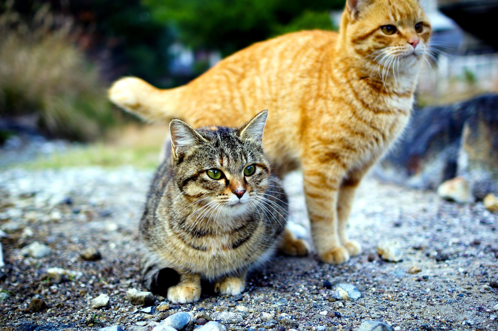

Comportamento felino
Os gatos são animais fascinantes, comunicando-se principalmente por meio de sinais não verbais como o movimento da cauda e o ronronar. Embora independentes, eles apreciam a companhia humana e mantêm instintos de caça. Observar e compreender seus comportamentos individuais é essencial para estabelecer uma relação gratificante com esses companheiros felinos.
Cuidados e saúde do gato
Gatos são animais fascinantes que se comunicam principalmente por sinais não verbais, como o movimento da cauda e o ronronar. Embora sejam independentes, eles apreciam a companhia humana e mantêm instintos de caça. Compreender seus comportamentos individuais é essencial para estabelecer uma relação gratificante com esses felinos encantadores.

Curiosidades sobre raças de gatos
As raças de gatos são diversas e fascinantes, cada uma com sua própria história e características distintas. Desde os majestosos Maine Coons até os elegantes Siameses, há uma infinidade de raças para cativar os amantes de felinos. Cada raça possui peculiaridades únicas, como o tamanho impressionante dos Maine Coons e a personalidade vocal dos Siameses. Independentemente da preferência, há um gato para cada estilo de vida e preferência, tornando-os companheiros de vida excepcionais para aqueles que os acolhem em seus lares.

Integração de gatos na família
Integrar um novo gato na família requer paciência e preparação. É importante oferecer um ambiente seguro, introduzir gradualmente o novo gato aos membros humanos e animais existentes, e observar sinais de estresse. Fornecer recursos adequados e tempo para ajuste promove uma transição suave. Com dedicação, a integração resulta em laços fortes e harmonia familiar.